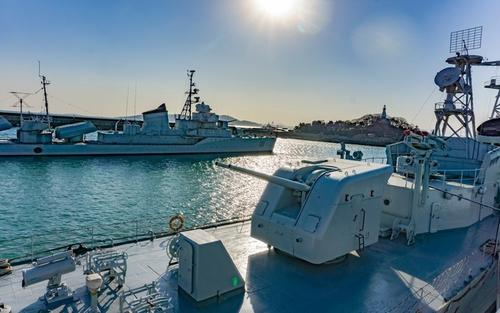
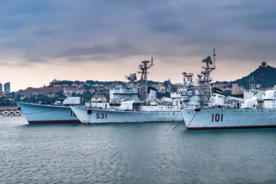
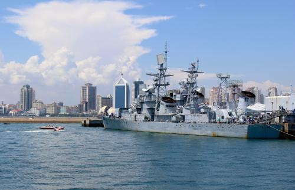
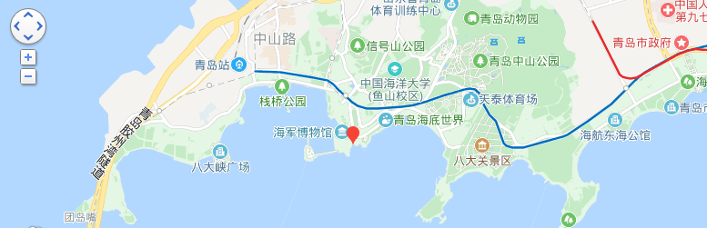

青岛海军博物馆
时间：2019/11/11

【简介】 | ||
|---|---|---|
|  |  | |
|
青岛海军博物馆由中国人民解放军海军创建，是中国唯一的一座全面反映中国海军发展的军事博物馆。海军博物馆是全国爱国主义教育示范基地，国家AAA级旅游景区。 青岛海军博物馆坐落于青岛市莱阳路8号，东邻鲁迅公园、西接小青岛公园与栈桥隔水相望、南濒一望无际的大海、北面是著名景点青岛信号山公园，占地四万多平方米。 |
2005年3月被中宣部、国家发改委、国家旅游局等十三部委评定为全国首批百个红色旅游经典景区，2008年5月被国家文物局评定为国家一级博物馆。 青岛海军博物馆是海军组织筹建的一座大型专业性军事博物馆。1988年11月筹建，1989年10月1日正式向社会开放，1993年3月正式列编，1997年3月被山东省定为山东省国防教育基地。 |
|
【馆内珍藏】
苏联海军军官佩剑：是1989年北海舰队司令马辛春中将率“郑和舰”访美时，由美国海军第三舰队司令吉姆斯·多塞中将所赠，工艺绝伦，堪为上品。
上甘岭枯树干:是朝鲜人民军代表团赠送我东海舰队的礼品。
巨浪1号:作为中国最早研制的一型潜地导弹，“巨浪1号”不同于一般的导弹，它不仅可携带常规弹头，还可携带核弹头，用于攻击敌方战略目标。在中国各军事类博物馆中，展出战术型导弹的颇多，而展出战略型导弹的则非常少，更何况还是潜射式的战略导弹。
伊尔─14飞机:是1956年斯大林送给毛泽东主席的座机，一段时间曾是毛主席的专机。1957年毛泽东主席曾乘坐过两次。
长征一号:中国已退役的首艘核潜艇“长征一号”（舷号401）进驻中国海军博物馆。“长征一号”入驻海博，标志着该艇成为第一艘完成从研制生产、使用管理、退役处置全过程的核潜艇，也标志着我国具备了核潜艇的全寿命保障能力。
502南充舰和531鹰潭舰:上世纪八十年代，南沙赤瓜礁海域爆发过一场海战。海战中，中国海军3艘战舰鹰潭舰、湘潭舰、南充舰参战，英勇地捍卫了国家的海洋领土。这3艘英雄战舰中，556湘潭舰后来远赴孟加拉国，并成为孟加拉国海军主力舰。另外两艘——502南充舰和531鹰潭舰在20世纪90年代中期退役后，都先后进入了海军博物馆，成为那场海战最直接的纪念。
101鞍山舰:作为人民海军的首艘驱逐舰，长期以来该舰一直成为人民海军的象征。鞍山舰1936年在海参崴的202船厂铺设龙骨，1940年下水，1941年建成加入苏联红海军太平洋舰队服役。需要说明的是，网上多将其建造序号“C-324”错误地当成了其船厂的名字。虽然鞍山舰没有经历过海战，但却长期在我领海外担负监视外舰的任务，久经考验。
105济南舰:中国自行建造的第一艘驱逐舰——051型导弹驱逐舰的首舰——105济南舰。济南舰1968年铺设龙骨开工，1970年下水，1972年正式入列服役，原舷号为223，1974年调整舷号为105，1986年调整舰名为济南舰。在诸多的051型舰中，该舰的特征最明显——舰艉的主炮和深弹发射装置于1987年被拆除，改成了直升机机库，海军在济南舰首次实施了舰载机着驱逐舰试验并获得成功，成为中国第一艘具备载机能力的驱逐舰。
【交通信息】
火车站公交路线:可乘坐26路、202路、223路、304路、312路、316路、321路、501路、504路到鲁迅公园站即可。 长途车站公交路线：可乘坐15路到中山公园或者206路到武胜关路站换乘 26路、202路、223路、304路、312路、316路、321路、501路到鲁迅公园站即可。 乘6路、214路、228路、231路、311路、411路、隧道2路、隧道6路、都市观光1线至鲁迅公园站。 坐地铁M3号线在人民会堂站下车。